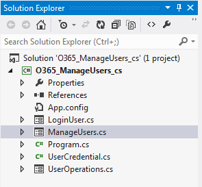

Description of the Sample
Prerequisites
The following are required to be configured, or installed on the computer where you will build and use the sample:
-
Office 365 Enterprise subscription.
-
User account credentials in the Office 365 organization having at least User Administrator privileges.
-
Windows 7 or Windows Server 2008 R2 with Windows PowerShell installed.
-
Visual Studio 2012 including components for Windows Forms applications installed.
-
.NET Framework 3.5 installed and enabled in Visual Studio.
-
Microsoft Online Services Sign-In Assistant installed.
-
Microsoft Online Services Module for Windows PowerShell installed and configured as described in the following procedure.
To run the sample you must enable remote control of Office 365 by performing the following steps.
Enable Office 365 remote control
-
Locate the Microsoft Online Services Module for Windows PowerShell shortcut on the desktop.
-
Right-click the shortcut and choose Run as Administrator.
-
Click Yes if the User Account Control dialog box appears.
-
In the Windows PowerShell window, run the command Get-ExecutionPolicy.
-
If the command returns RemoteSigned, your computer is already configured properly to manage Office 365 remotely via Windows PowerShell.
-
If the command returned is not RemoteSigned (typically Restricted), run the command Set-ExecutionPolicy RemoteSigned and then enter Y when prompted.
-
In the Windows PowerShell window, run the command Get-ExecutionPolicy and verify that it returns RemoteSigned.
-
Close the Windows PowerShell window.
Key components of the sample
The sample is a Windows Forms application that contains the following:
-
An application main window that displays a grid listing Office 365 user accounts in the organization.
-
A dialog box to enter the administrator logon credentials.
-
A dialog box to set user information.
Build the sample
Before you begin using the sample, you should visit the Office 365 admin portal and verify the admin account's privileges. That account must have at least User management administrator privileges in the organization.
-
Open Visual Studio 2012.
-
Click File, Open, Project/Solution.
-
Navigate to the directory where you extracted the sample files.
-
In the O365_ManageUsers_cs folder, select O365_ManageUsers_cs.sln and click OK.
After the sample opens, the Visual Studio Solution Explorer should look like the following screen shot:

Run and test the sample
-
In Visual Studio click Run, or press F5 to build and start debugging the sample.
-
When the Enter Credentials dialog box appears as shown in the following screen shot, enter the administrator account user name and password and click Login.
Figure 2. Enter Credentials Dialog Box.

-
The main window is displayed in full-screen mode after you enter the credentials, as shown in the following screen shot. (User information is hidden in the image.)
Figure 3. Manage Users Dialog Box.

-
To add a new user, click Add User. The Add User dialog box will appear, as shown in the following screen shot. Fill in the form fields and click the Add User button.
Figure 4. Add User Dialog Box.

-
To edit a user's settings. click the Edit button on the main window at the right of the row showing the user you want to edit. The Update User dialog box has the same fields as the Add User dialog box. Click Update User to save the changes.
-
To close the sample, click the X in the upper-right corner of the window.
Troubleshooting
The following table lists the common configuration and environment problems that prevent the sample from building or deploying successfully and how you can solve them.
|
Problem |
Solution |
|---|---|
|
The Login dialog box reports "Unable to authenticate your credentials." |
Make sure that your user name is in the format: <username>@<domain> and that your password is correct. |
|
Windows PowerShell or the application reports "The term 'Connect-MsolService' is not recognized as the name of a cmdlet, function, script file, or operable program…." |
Your user account doesn't have permission to run Windows PowerShell, or you have not installed the Microsoft Online Services Module for Windows PowerShell, or the execution policy is not set to RemoteSigned as described in the Prerequisites section. |
Change log
|
Version |
Date |
|---|---|
|
First version |
February, 28 2013 |